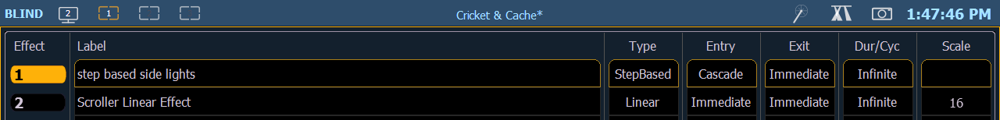

Several displays have click supported cells. Clicking on a cell will select and place it on the command line. You can click on multiple cells to select a range of items. Double-clicking a row header will select that row and deselect any other rows. In-Cell editing must be enabled in Setup>Device>Displays. See In-Cell Editing

The following displays have clickable support: